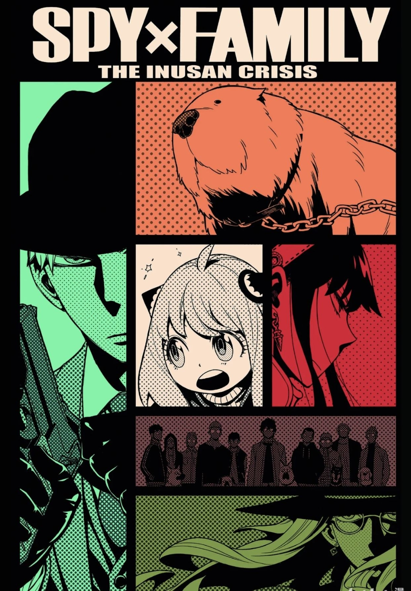

|
人物简介 | 剧情简介 | 作者介绍 | 大众评价 | 返回主页 |
大众评价 
评分情况《间谍过家家》在豆瓣上的评分为9.1分，显示出观众对其高度认可 。此外，该动画在微博等平台也获得了广泛好评，豆瓣评分为9.4分，与《eva》同分。 观众评价 《间谍过家家》的观众评价呈现出两极分化的特点。喜欢这部作品的人认为它是一部合家欢的轻喜剧，设定新奇，剧情温馨，角色设计美型，配音水准高，画面效果出色。然而，也有部分原著粉认为动画没有完全还原漫画的精彩之处，认为动画在某些细节上有所欠缺。总体来说，这部作品在路人观众中评价极高，但在二次元圈子中评价较为严格。 制作质量 《间谍过家家》的制作质量非常高，动画对漫画的还原度很高，细节处理得非常到位。动画的画风美型，角色设计精致，配音演员也都是经验丰富的人气声优。此外，动画的背景音乐和音效也非常出色，进一步提升了整体的观感。 剧情和角色设定 剧情方面，《间谍过家家》讲述了一个由间谍、杀手和读心者组成的临时家庭的故事。这个设定非常新奇，充满了反差和幽默感。剧情紧凑，充满了温馨的家庭情感和卖萌元素，使得作品既有深度又有娱乐性。角色设定方面，父亲黄昏、母亲约尔和女儿阿尼亚的互动非常有趣，角色之间的关系复杂而有趣，使得观众能够产生强烈的情感共鸣。
综上所述，《间谍过家家》不仅在评分和评价上表现出色，还在制作质量、剧情和角色设定等方面都得到了广泛认可。尽管存在一些争议，但总体来说，这是一部非常成功的动画作品。 |